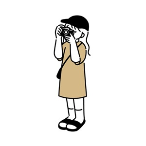
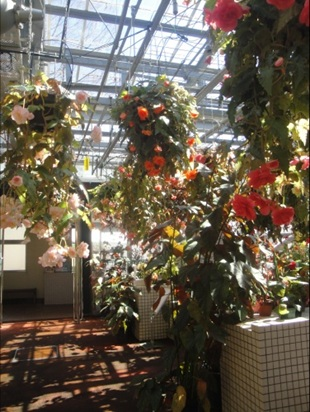
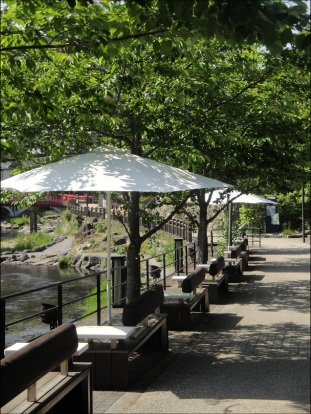
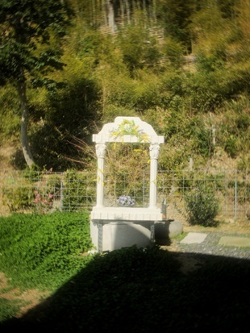

- トップ >
- HOBBY
HOBBY

立ち止まって、
カメラを向けるのが癖に。
小さい頃から使っているオールドデジタルカメラや、スマートフォンのカメラ機能を使って、散歩をしながらや旅先で写真を撮るのが癖になっています。
PHOTO-01
植物をメインに撮影しました。いろいろなところへ旅をする中でそこにしかない植物のらしさを捉えました。



PHOTO-02
来月更新予定です。しばらくお待ちください。